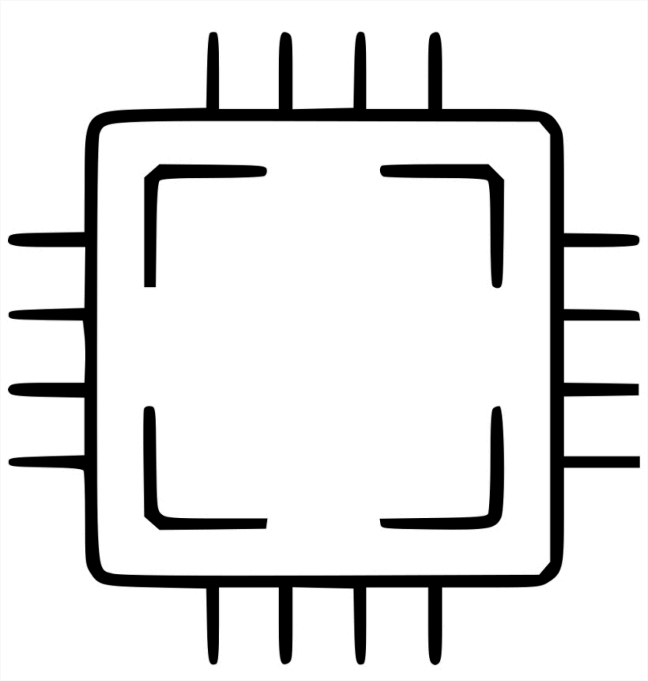

CPU (Completed)
Programmed a fully working single cycle processor and control unit. The
processor was designed to utilize datapath components such as registers, arithmetic logic units (ALU), and sign extenders
so that it could perform instructions like adding, subtracting, or shifting bits. This was done on the Raspberry Pi 4 B single board computer
and uses C and Verilog. Click here for the repo.